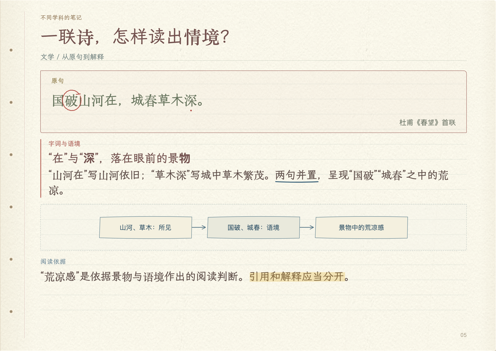
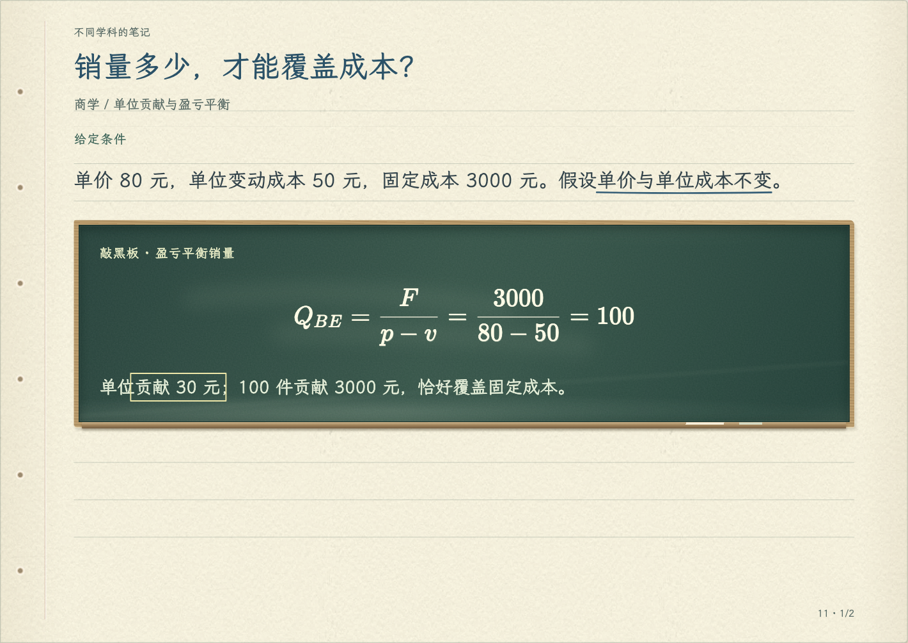
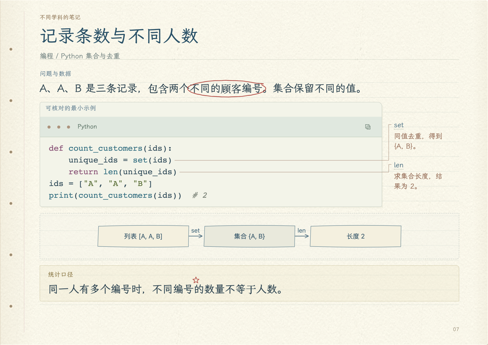

理工 · 条件与推导
每一期，都乘一次 1 + r
公式旁边写明适用条件，推导配上计算例子，读到哪一步都能对照。
这本产品笔记展示实际排版、圈画和生成流程；每一页都使用正式阅读器。
公式、原文、数据和代码，各有适合的排版与讲解方式。
公式旁边写明适用条件，推导配上计算例子，读到哪一步都能对照。

字词解释紧贴原句，景物与语境用关系图串起来。

公式、变量和销量对照表放在一起，收入与成本的关系一眼可查。

代码保留缩进和语法颜色，关键函数配有旁注，输入到结果连起来看。
圈关键词、划荧光、添星标，九种标记帮你留下阅读线索。点选即可删除，同一处同类标记不会重复堆叠。
关键原句集中收进“重点”，点击就能回到原页。目录、搜索和公式索引，让查找与复习少翻几页。
按习惯选择翻页效果，进入沉浸模式专心读。无需账号，离线也能用；下载个人副本，圈画和作答一同保存。
复制指令后，AI 先等待你上传文件或明确“没有文件”；无参考材料时会按可用能力检索资料并绘制图解，再用选择题确认主题、基础与学习范围。
快速补一章、准备考试，或系统学一门课，都可以指定学习范围、已有基础、讲解难度和练习需求。
要求紧跟材料时，保留原题、答案和顺序。需要拓展的解释另作说明，原文中的疑点也会标出。
文字版 PDF、扫描件和拍下的讲义都能作为素材。识别不清的字词、公式会标出疑点，方便对照原件确认。
更新笔记后，已有的标记与作答继续保留。原文变化较大、暂时找不到位置的标记会单独列出，方便重新关联。
64 秒了解 Skill 与对话生成、内容排版、圈画复习和离线保存。
生成新笔记时，复制指令给 Agent、ChatGPT 或 DeepSeek，再附上主题和材料。已生成的 HTML 可以保存到本地，随时离线阅读。